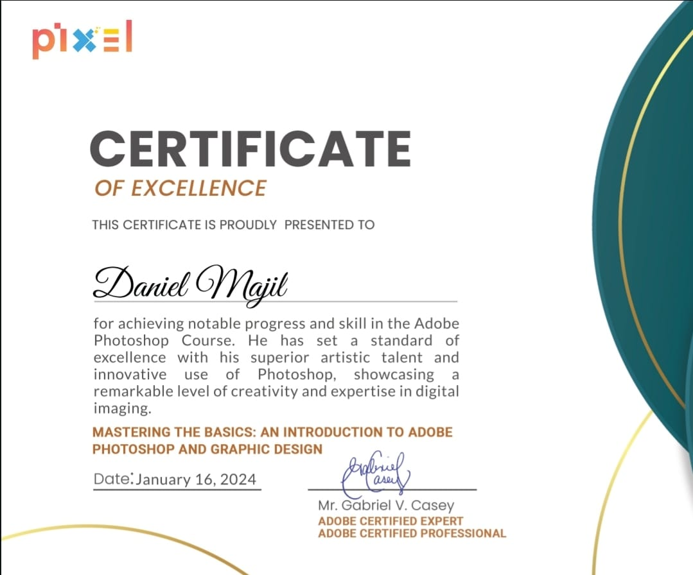

My Certifications

Graphic Design Completion
I received a graphic design certificate from Pixel Belize which was very fun and interesting and useful as eveuthing I have learned there is valuable.

Data Optimization technician
I worked as a Data Technician and gained experince in handling data properly and setting up different databases to be efficient and collect data using codes created in python.